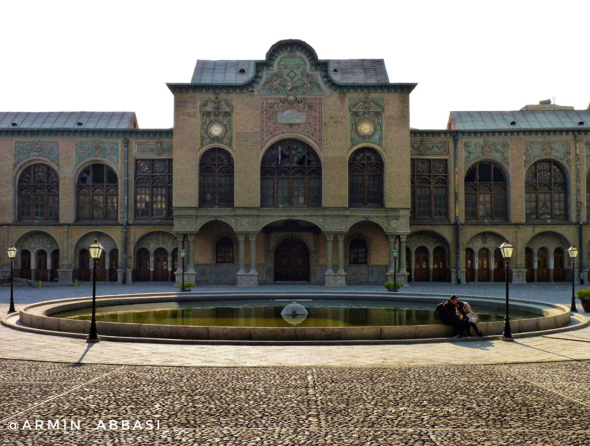
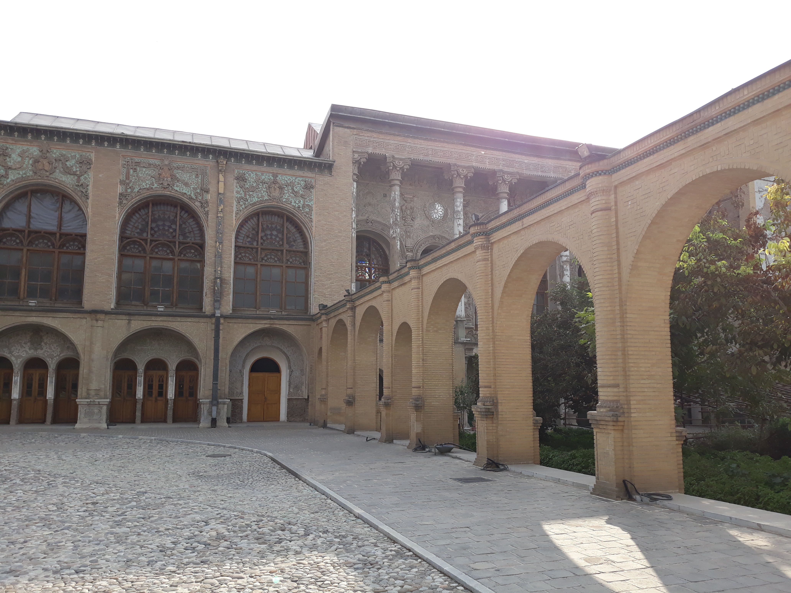
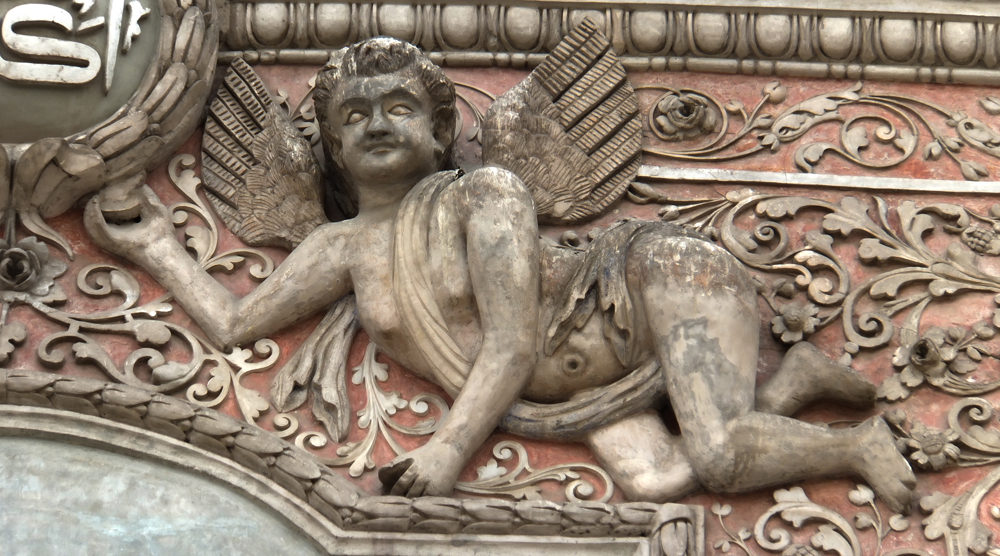
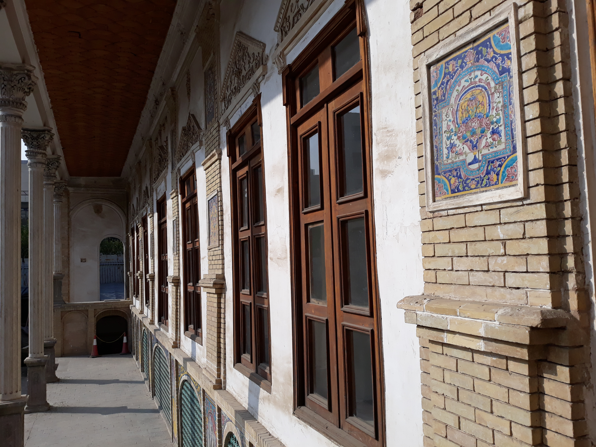
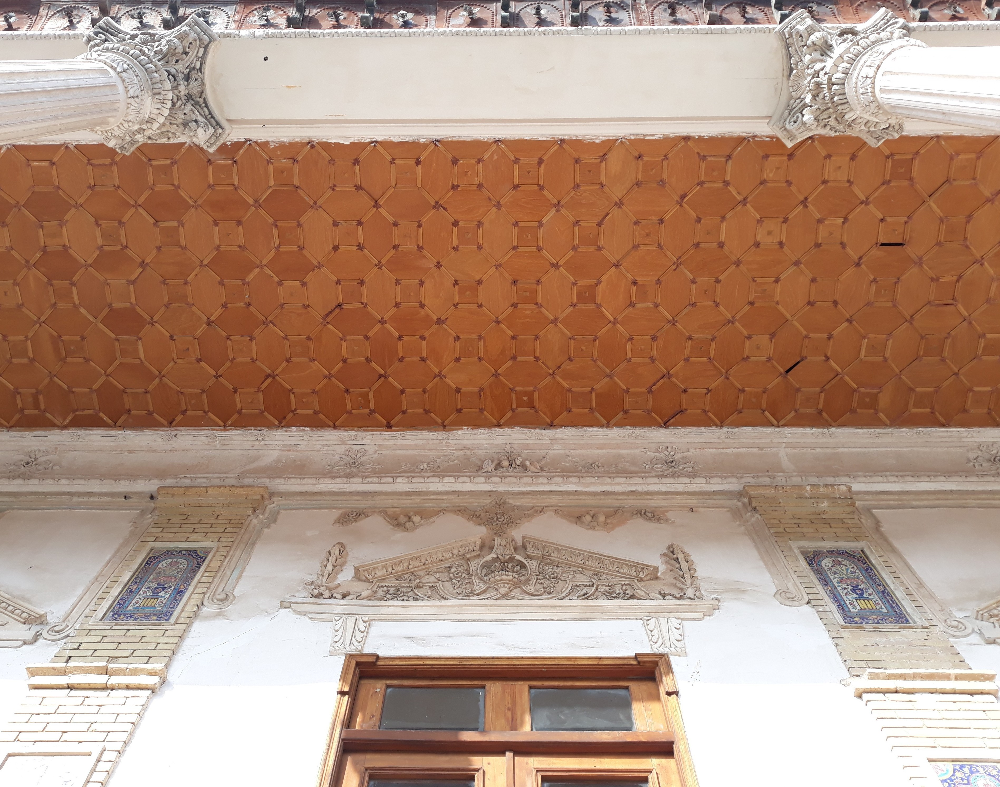
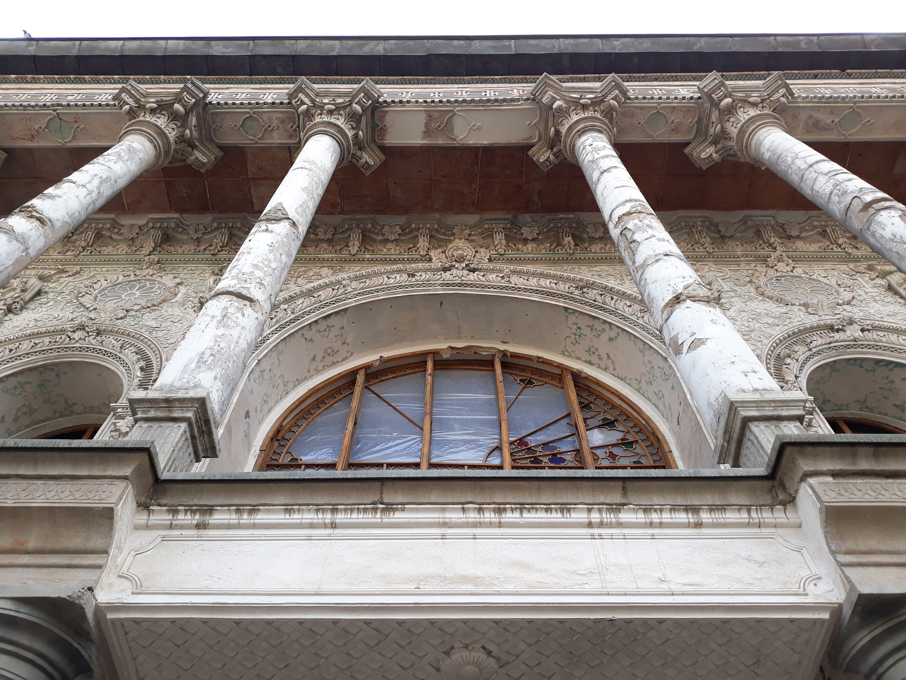
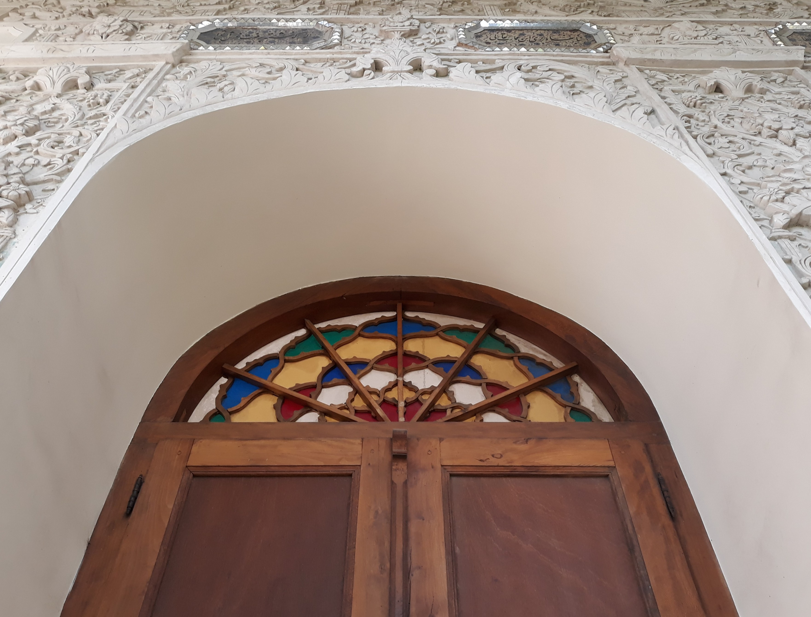
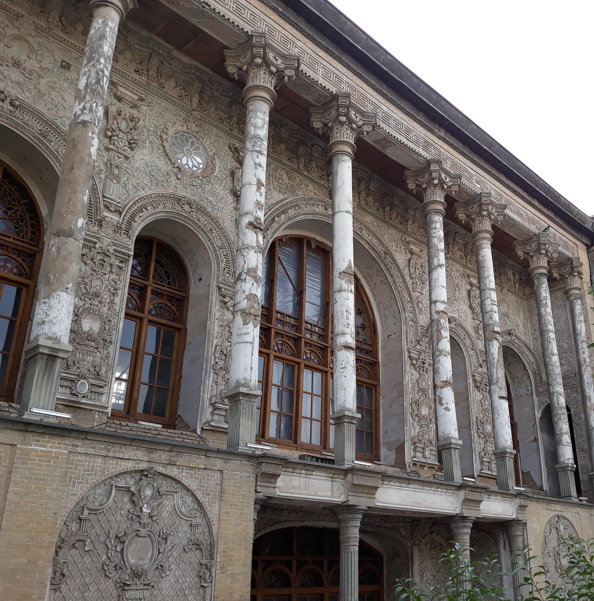
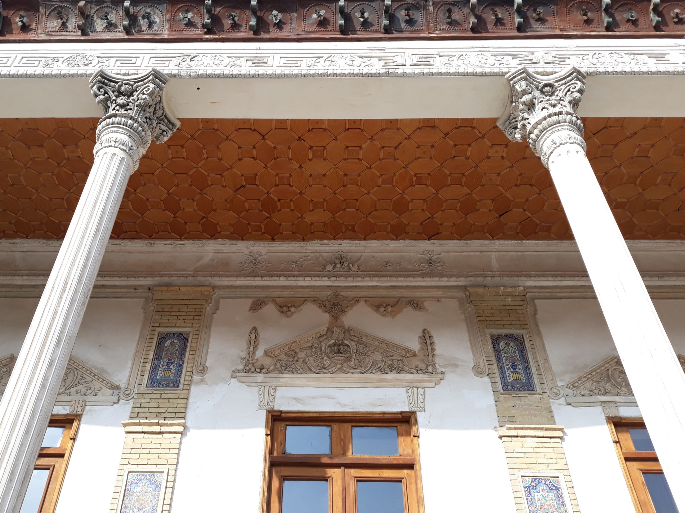
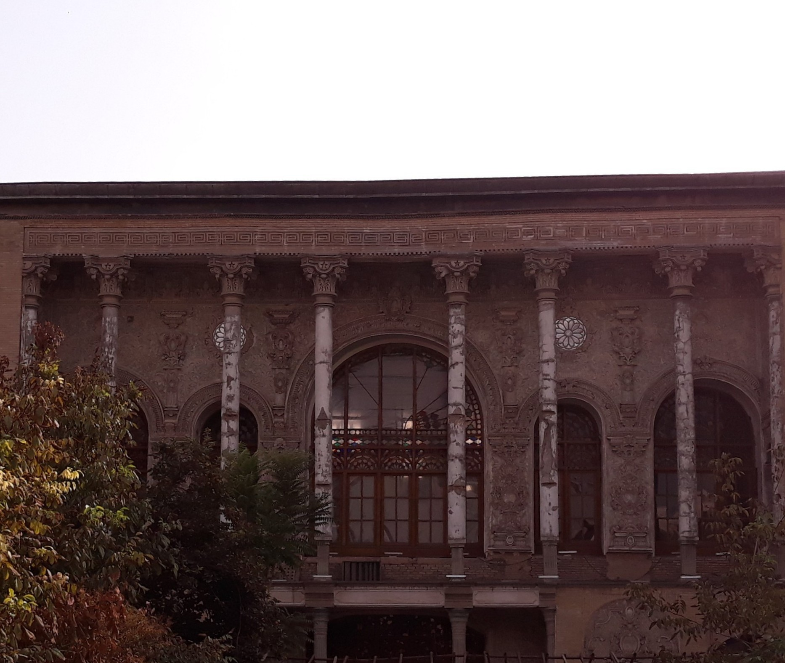

تور روایی «شب ارسیها» در دیوانخانه
بازدید شبانگاهی با روایت معماری قاجار، نورپردازی روی گچبریها و گفتوگوی کوتاه با مرمتگران مجموعه.

اتاق رسانه مسعودیه، اخبار فرهنگی، فراخوان بازدید و آرشیو تصویری عمارت را در یک جا گرد میآورد. موارد زیر نمونه محتوای نمایشی برای ارائه به کارفرماست.

بازدید شبانگاهی با روایت معماری قاجار، نورپردازی روی گچبریها و گفتوگوی کوتاه با مرمتگران مجموعه.

تیم حفاظت، تزئینات نفیس دیوارها را عکسبرداری و طبقهبندی میکند تا مسیر مرمت دقیقتر شود.

نمایشگاه عکس در سفرهخانه، با تمرکز بر حیاطها، حوض و زندگی روزمره مجموعه در دهههای گذشته.

دانشآموزان با نقشه حیاطها، کاشی و ارسی آشنا میشوند و دفترچه دانشنامه مسعودیه را تکمیل میکنند.




